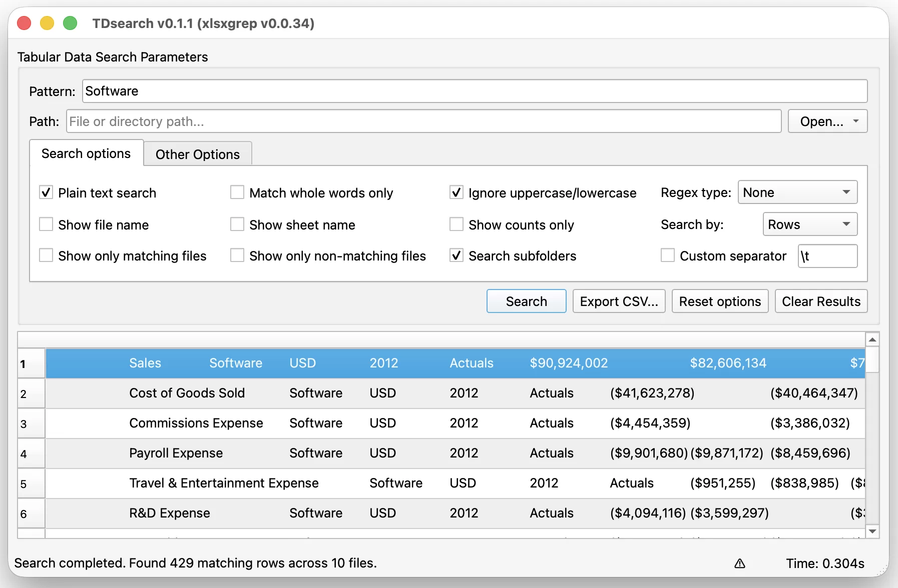

Flexible matching
Use plain text, whole-word filters, Python regex, or POSIX expressions for precise retrieval.
Search file collections by text or pattern, review matches in context, and export results to CSV.

Search entire folders with a crisp native interface, keep the results in context, and export the exact records that matter. TDsearch brings a practical search workflow to dense, everyday data.
Use plain text, whole-word filters, Python regex, or POSIX expressions for precise retrieval.
Review files, sheets, positions, and matching rows in one structured results table.
Search a file or recursive directory tree, using available CPU cores for larger collections.
Standalone desktop installers, built with PyInstaller via GitHub Actions. Builds are not code-signed, so each OS shows a first-run warning — see the note under each download for how to proceed.
Portable build, no installer required.
Download for WindowsNot code-signed, so SmartScreen will show “Windows protected your PC.” Click More info, then Run anyway.
DMG disk image or PKG installer, Apple Silicon.
Download for macOSNot notarized, so Gatekeeper will block it. Right-click (Control-click) the app and choose Open, then confirm Open in the dialog — or allow it via System Settings → Privacy & Security.
Choose the package for your distribution.
Packages are unsigned. If your package manager reports a missing GPG signature, install directly from the local file: sudo apt install ./tdsearch-*.deb or sudo dnf install ./tdsearch-*.rpm --nogpgcheck.
TDsearch installs as a Python package and starts as a desktop application.